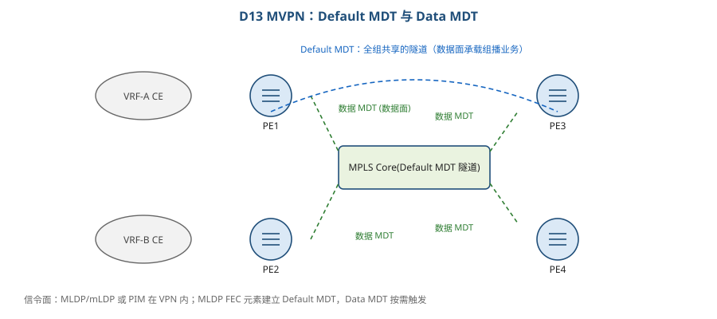

第 8 章 大规模组播：MVPN、mLDP、BIER 与组播 TE
精读来源：Volume II Ch3「Multicast MPLS VPNs」p.137–205 逐节通读（MDT/MTI、Data MDT、mLDP、Profiles、Provider Transport、Extranet VPN、IPv6 MVPN、BIER）、Ch2 p.105–134（Service Reflection、DMVPN 复制容量、组播 TE）、Ch6 p.314–331（MVPN 分层排障）、Williamson Ch16 p.475–500（限速、路径工程、GRE 负载分担） 纠正上一版：旧版写"四本原书均未系统覆盖 mVPN/mLDP"，这句是错的。Volume II Ch3 用 68 页从 draft Rosen 讲到 Profile 26、再到 BIER。本章据此重写，索引表每行都能翻到纸面页。
学习目标
- 说清运营商为什么不在骨干里为每个客户跑 PIM；
- 分清 Default MDT 与 Data MDT 的分工，知道地址池耗尽后会发生什么；
- 讲清 mLDP 的 FEC 装了什么，in-band 与 out-of-band 差在哪；
- 看懂 Profile 编号（0/1/2/14…）是"核心树 × 信令"两个维度的拼法；
- 说清 PE-CE、CE-CE、PE-PE ingress replication 的取舍；
- 解释 BIER 为什么不需要 PIM/mLDP/RSVP-TE；
- 把"P-tunnel 通、客户不通"按 5 层拆开定位。
1. 为什么骨干不跑客户的 PIM
跨 MPLS VPN 传组播，核心要满足三条（v2 p.138）：支持多 VRF（地址可重叠）、不压垮 P 路由器、对客户透明。原书给的承载只有三类：
| 承载 | 封装 | 谁复制 | 特征 |
|---|---|---|---|
| GRE | IP-in-IP + GRE | 上游 PE，mGRE 天然全互联 | 最早最广，Profile 0 |
| mLDP | MPLS 标签（P2MP/MP2MP LSP） | LSP 分叉点（bud node） | 与单播同套转发，P 上不跑 PIM |
| ingress replication | 单播隧道 | 入口 PE 逐份复制 | 核心不支持组播时兜底 |
三者不是演进替代，而是同网按流共存（Profile 19/21/23/25 就是 IR）。

2. Default MDT 与 MTI
2.1 常开的 MP2MP 树（p.139–140）
Default MDT 包含该 VPN 内所有 PE，靠同一 RD 或 RT 归属。原书的措辞是关键：
"When the default MDT has been configured, it is in an active state, or always operational, and is used to transmit PIM control messages (hello, join, and prune)."
即：一条业务流都没有时，Default MDT 也在传 PIM 控制报文。这解释了"客户 VRF 无流量，骨干却有稳定低速组播"（p.140）。
GRE 封装（p.139 Figure 3-2）：
[客户 IP 头 10.1.1.5 → 10.2.2.5]
[GRE 头]
[骨干 IP 头 172.16.12.20 → 224.1.1.20] ← 目的 = MDT 组地址
[骨干 MAC 0100.5E00.0001]
MDT 组地址落在 224.0.0.x，二层"永不剪枝"（对照第 2 章），所以控制报文天然到所有 PE。
2.2 配置与 MTI（p.141、p.143–144）
vrf definition RED
rd 65000:1
address-family ipv4
mdt default 232.0.0.1 ! 所有 PE 必须一致
mdt data 232.0.1.0/24 threshold 2
MTI 每个 MVPN 自动创建。IOS-XE show vrf RED 能看到两个（p.144）：
Tu1 ← Default MDT
Tu2 ← Data MDT（已触发阈值）
IOS-XR 对应 show mfib vrf RED interface。排障第一眼看 Tu 口在不在、flag 里有没有 MI（p.160 的 mdtRED Flags: F NS MI）。
3. Data MDT：从"人人有份"到"要才给"（p.142）
Data MDT 是 Default MDT 的子集，形态 P2MP，root 在离源最近的 PE——原书特别指出 root 也可能落在 P 路由器上（p.141 Figure 3-4）。
mdt data 232.0.1.0/24 threshold 2 ! 阈值 1–4294967，单位 kb/s
- 超阈值 → 从池中分一个地址 → 通告 Data MDT；
- 池耗尽后地址会被复用（p.142）："you may have routers receiving messages that are not of interest and should be dropped."
这是现网最易踩的坑：池规划太小，多条大流量共用同一 Data MDT 地址，接收 PE 收到不需要的流，靠 (S,G) 再过一遍才丢——带宽已经花掉了。
原书建议：Data MDT "not required but highly recommended unless there are very few multicast streams and they are low-bandwidth"（p.141）。
4. mLDP：把树交给标签
4.1 定位（p.160）
LDP 扩展，支持 P2MP / MP2MP LSP，与单播同封装。原书强调它是 pull 模型：
"MLDP is a true pull-model implementation in that the PE closest to the receiver is the device to initiate the LSP."
方向（p.161）：上游 = 朝 root，下游 = 远离 root；标签由下游按需分配（downstream on-demand），逐跳向 root 发 Label Mapping。
4.2 LDP 凭什么能跑组播（p.161）
靠会话建立后交换 capability TLV：
| 能力 | TLV |
|---|---|
| P2MP | 0x0508 |
| MP2MP | 0x0509 |
| Make Before Break (MBB) | 0x050A |
原书明说 Cisco 当时不支持 MBB。这决定了"改树 = 断后重建"，也是案例 4 的根。
4.3 FEC 的五个字段（p.161–162）
Tree type : P2P or bidirectional
Address family : IPv4 / IPv6
Address length : root 地址长度
Root node addr : root 的 IP（核心内）
Opaque value : 唯一标识这棵树
Opaque 的四种语义（p.162）：
| Opaque 类型 | 含义 |
|---|---|
| IPv4 / IPv6 PIM-SSM transit | 全局表 (S,G) 直接过核心 |
| Multicast VPN | VPNv4 流走 Default/Data MDT，mLDP 只是把 mGRE 换成 MP-LSP |
| Direct MDT / VPNv4 transit | 直接建 VPNv4 树、不要 Default MDT；原书注 "currently not a supported feature" |
关键结论（p.162）："Multicast VPN is independent of the underlying tunnel mechanism." 所以同一条客户流可从 GRE 平滑迁到 mLDP，客户侧无感——这是 Profile 迁移的理论基础。
4.4 in-band 与 out-of-band（p.162–163）
| in-band | out-of-band（overlay） | |
|---|---|---|
| 信令 | Label Mapping 直接带 FEC | 先用 PIM/BGP 建 FEC，再建 LSP |
| 发起 | 出口 PE 收到 IGMP Join 后 | 出口 PE，FEC 由 overlay 算出 |
| 典型 | Profile 6/7 | Profile 1/2/13/15（BGP-AD） |
| 排障入口 | show mpls mldp database |
先 BGP-AD，再 mldp |
in-band 三步（p.162）：PE3 收 Join → 用 FEC（root 取 BGP next-hop 或源地址）发 Label Mapping → 中间 P 逐跳换标签。所有连接收者的 PE 必须生成相同 FEC 元素（p.162 注），否则建出两棵互不相认的树——这正是"同组两个接收者走不同路径"的根因。
4.5 Default MDT over mLDP = Profile 1 = MI-PMSI（p.164）
三条要点：
- 核心不再需要 PIM，但 PE-CE 之间仍要 PIM；
vpn id必须全网一致，作用等价于 GRE 版的 MDT 组地址；- root 必须显式配置，"there is not an automatic discovery method today"。
原书的"过来人"警告（p.164）：
"avoid using a route reflector as the root as may adversely affect the control plane and consequently take down your entire network."
别把 RR 当 mLDP root。
4.6 root 高可用（p.164–165）
| 方案 | 机制 | 代价 |
|---|---|---|
| anycast root（RNR） | 主备同 IP，主用 /32、备用 /31 | 主挂后等 IGP 收敛 |
| 双 root | 两台同时做 root，PE 配两条 mdt default mpls mldp |
两棵树并存，状态翻倍 |
掩码技巧值得记：192.168.0.254/32 最长匹配选中主，故障后 /31 接管；切换时间 = IGP 收敛时间，不是 BFD 级。
5. Profiles：27 种拼法（p.181–185）
原书的吐槽解释了编号的意义（p.181）：
"…when you could just say, 'I am using Profile 14.'"
拆解只有三个维度：
核心树 : GRE / mLDP MP2MP / mLDP P2MP / P2MP-TE / IR
自动发现 : 无 / BGP-AD
C-multicast 信令 : PIM / BGP
| Profile | 核心树 | 信令 | 备注 |
|---|---|---|---|
| 0 | Default MDT GRE | PIM C-mcast | 最经典 Rosen |
| 1 | Default MDT mLDP MP2MP | PIM C-mcast | MI-PMSI，迁移首选 |
| 2 | Partitioned MDT mLDP MP2MP | PIM C-mcast | 仅 IOS-XR |
| 4 | Partitioned MDT mLDP MP2MP | BGP-AD + PIM | 混合平台可用 |
| 6/7 | VRF / Global mLDP | in-band | 无 BGP-AD |
| 8/10/18 | P2MP-TE | 静态或 BGP-AD | Profile 8 走全局表，不进 VPN |
| 14/15 | Partitioned MDT mLDP | BGP-AD + BGP C-mcast | 大规模常用 |
| 19/21/23/25 | ingress replication | BGP-AD | 核心不支持组播时 |
Partitioned MDT 的价值（p.182–183）：不需要 Default MDT，不再把无关流量推给所有 PE；代价是 Profile 2 只有 IOS-XR 支持。
平台矩阵（p.183–184 Table 3-1）：NX-OS 只有 Profile 0，且 IPv4 only。三平台混合网先看 NX-OS，再看功能清单。
5.1 迁移（p.185）
IOS-XE 两套并存 + 偏好：
mdt preference mldp
mdt default mpls mldp 192.168.0.8
mdt default 232.0.0.1
IOS-XR 用 RPL 按流选树，粒度到 (S,G)：
route-policy MCast-Policy-RED
if source in (172.16.12.20/32) then
set core-tree pim-default
endif
if destination in (224.1.3.0/24) then
set core-tree mldp
else
set core-tree mldp-partitioned-mp2mp
endif
end-policy
!
router pim
vrf RED
address-family ipv4
rpf topology route-policy MCast-Policy-RED
最后一句要记：policy 挂在 rpf topology，不是接口——选树本质是选 RPF 拓扑。
6. 客户侧对接与 Extranet
6.1 四种对接（p.186–188）
| 方式 | 前提 | 适用 |
|---|---|---|
| PE–CE | PE 与 CE 之间必须跑 PIM | 通用；RP 可放 CE，整 VPN 只需一个 RP（p.187） |
| CE–CE（PE 当 RP） | 自管理 MPLS，可配 Anycast RP | 运营商代维 |
| CE–CE（各点 RP + MSDP） | 配置量大 | SP 管理的 L3VPN |
| PE–PE IR | 核心完全不支持组播 | 兜底，原书："not one that should be used all the time" |
Provider 传输三手段（p.186）：PIM（GRE）、mLDP（P2MP/MP2MP）、TE 隧道（Profile 8/10/18）；Profile 8 的特殊性是不进 VPN、直接用全局表。
6.2 Extranet 四个工具（p.192–202）
| 工具 | 机制 | 风险 |
|---|---|---|
| Route Leaking | 源 VRF 的组播路由与 RT 泄到接收 VRF | RT 配错 ⇒ 全量泄漏 |
| VRF Fallback | 本 VRF 查不到回落全局表 | 全局有默认路由时可能静默串流 |
| VRF Select | 按 (S,G) 选 VRF |
策略复杂易漏 |
| Fusion Router / VASI | 外部路由器或 VASI 口做逻辑直连 | 多一跳，RPF 与 MTU 重算 |
VASI 用法（p.202）：vasileft1 接 VRF RED、vasiright1 接 VRF BLU，"essentially building a logical wire"，之后可在 VASI 口叠安全/NAT 策略。
6.3 IPv6 MVPN（p.202）
原书态度是"几乎不用改"：
address-family ipv6 unicast
address-family vpnv6 unicast
address-family ipv4 mvpn
address-family ipv6 mvpn
坑：ipv4 mvpn 与 ipv6 mvpn 是两个独立 AFI，只开一个，另一族的 C-multicast 路由不传。双栈迁移高频故障（对照第 10 章）。
7. BIER：把树换成位串（p.202–205）
7.1 机制（p.202）
- 域内每台路由器分配唯一 bit 位置；
- 入口（BFIR）把包封进 BIER 头，位串每个 bit 代表一台出口路由器；
- 转发状态由 IGP（OSPF/IS-IS） 建立，用新 LSA 交换"bit ↔ 路由器"映射；
- 每台 BFR 做按位与决定往哪些邻居发；
- MPLS 下把 BIER 标签映射到 MPLS 标签，称 BIER MPLS。
四步（p.203）：
1. 每台路由器分配 bit position mask
2. 边缘路由器用 IGP 泛洪 bit → ID 映射（新 LSA）
3. 所有 BFR 计算到每个 BFR index 的最优路径，邻居 bitmask 取"或"
4. 数据包按 bit forwarding table 做逻辑与后转发
7.2 转发与信令解耦（p.204）
"In BIER, multicast forwarding is kept separate from the signaling."
- 接收者信息靠 overlay（BGP） 学（IOS-XR 的实现）；
- 转发状态不是 per
(*,G)/(S,G)，而是 per 出口路由器（p.205）； - 不需要 PIM、mLDP、P2MP-TE 在每台路由器上建状态。
set：把路由器分组（类似 area），转发看 set ID；ECMP：到同一邻居的并行链路合成一个 bitmask，到不同邻居的等价路径各自独立（p.203–204）。
7.3 它解决的四件事（p.203）
| 旧方案的问题 | BIER 的答案 |
|---|---|
| 树构建占内存，域大收敛慢 | 无显式树，IGP 直接算 |
| RPF 建树在多路径下两端可能不一致 | 位串 + IGP 最短路径 |
| 无法控制面聚合，每条流一份状态 | 状态 per 出口，不是 per 流 |
| 组播控制面难排障 | 转发与信令解耦 |
7.4 现实约束（p.205）
原书直说："BIER … is available only in IOS-XR at this writing." 所以它的位置是"新建大型 SP 域内传输"，不是存量网改造。评估先问：域内是否全 IOS-XR、IGP 是否支持 BIER LSA。
8. 组播 TE：四条老办法仍然管用
Williamson Ch16（p.475–502）与 Volume II Ch2（p.105–134）合起来是一套"不改协议、只改路径"的工具箱：
| 手段 | 页码 | 要点 |
|---|---|---|
| 限速 / Scoped zone | W p.476–478 | ip multicast rate-limit in/out [video\|whiteboard] [group-list] [source-list] kbps；配合管理范围把流挡在边界内（对照第 1 章 239/8） |
| 静态 mroute 做路径工程 | W p.501 | ip mroute 10.2.0.0 0.0.255.255 Tunnel0，把某段流量强制塞进隧道 |
| GRE 隧道做负载分担 | W p.500–501 | 多路径下组播只有一个入接口，PIM 取最高 IP 做 tiebreaker；进隧道后可复用单播 ECMP |
| DMVPN 复制容量 | v2 p.118–119 | 200 MB × 100 spoke = 2 GB 全压在 hub 出向，必须多 headend 分摊 |
| Service Reflection | v2 p.105–117 | 组播↔单播目的地址互转，解决"云上不转发组播" |
易忽略的细节（W p.500）：PIM 在等价路径上用最高 IP 地址做 tiebreaker。这解释了"加了一条等代价链路，组播反而换路"——单播 ECMP 哈希变了，组播的 RPF 邻居也变了。
9. 排障：按 5 层剥（v2 Ch6 p.314–331）
原书把 MVPN 比作 "an onion or parfait"（p.314），多层依赖。沿用第 12 章的三步法，每步追加检查：
| 层 | 检查 | 命令 |
|---|---|---|
| 1 客户侧 | IGMP、(*,G) 是否在 LHR |
show ip igmp groups、show ip mroute |
| 2 PE-CE | PIM 邻居、C-RP 可达 | show ip pim neighbor vrf RED |
| 3 C-multicast 路由 | 远端 PE 是否收到 (C-S,C-G) |
show bgp vrf RED ipv4 mvpn |
| 4 P-tunnel | MDT/MTI、标签连续性 | show mdt、show mpls mldp database、show mfib vrf RED interface |
| 5 核心单播 | PE 间 loopback 可达、MTU | ping、traceroute mpls、show ip route |
顺序不能反：先确认客户有需求（1–2），再看控制面是否传过去（3），最后才是隧道（4–5）。反过来做，会在"客户根本没发 Join"时查半天 mLDP。
10. 八个工程案例
典型化场景：按 MVPN 常见故障模式构造，非原书案例；机制均可在上表页码核对。
案例 1：Default MDT 有流量，客户收不到
- 现象：
show mdt正常，骨干有稳定低速组播；客户 VRF 无(C-S,C-G)。 - 定位：
show bgp vrf RED ipv4 mvpn、show ip pim vrf RED neighbor。 - 根因：PE-CE 之间没跑 PIM（p.187 的必备条件），客户 Join 没进 PE。
- 处置：面向 CE 的接口开 PIM，核对 C-RP 可达。
- 复盘：Default MDT 常开 ≠ 业务可用，它是控制通道（p.140）。
案例 2：Data MDT 池耗尽，多条大流共用地址
- 现象：30 条高清流，接收 PE 入向带宽是需求 3 倍；
show ip mroute里大量(S,G)有入向无出向。 - 定位：
show mdt（地址分配）、show ip mroute count。 - 根因：
mdt data 232.0.1.0/24池太小，地址被复用（p.142），接收 PE 收到不属于自己的流才丢。 - 处置：扩池或按业务分段规划。
- 复盘：池大小属于带宽规划，不是随便给个 /24。
案例 3：mLDP root 选在 RR 上，一次维护全断
- 现象：RR 升级重启，全 VPN 组播中断 6 分钟，单播正常。
- 定位：
show mpls mldp root指向 RR loopback；查变更记录。 - 根因：违反原书警告——RR 不能当 mLDP root（p.164）。
- 处置：root 迁到专用 PE 或双 root，RR 只管控制面。
- 复盘：root 同时是数据面复制点与树维护者，与 RR 角色冲突。
案例 4：改 RD 后组播闪断 40 秒
- 现象：调整 VRF RD，组播中断约 40 s，BGP 秒级收敛。
- 定位：
show mpls mldp database（FEC 全变）、show mdt。 - 根因：RD 进了 FEC 的 opaque（p.162），RD 变更即整棵 LSP 重建；且不支持 MBB（p.161），只能断后重建。
- 处置：变更窗口内操作，批量改 RD 前评估树规模。
- 复盘：RD 不只是控制面标识，它进了数据面的 FEC。
案例 5：迁到 Profile 1 后部分组不通
- 现象：
mdt preference mldp已配，多数组正常，个别组仍走 GRE 或直接不通。 - 定位：
show mdt（两套并存）、show mpls mldp database brief的 opaque（[mdt 65000:2 0]为 Default、… 1为 Data）。 - 根因：
vpn id不一致（p.164 要求全网一致），或某 PE 漏配 root。 - 处置：统一
vpn id，逐 PE 核对mdt default mpls mldp <root>。 - 复盘：迁移期两套并存是设计（p.185），别把"并存"当故障，要看"该走新树的是否真走了"。
案例 6：bud node 复制把某条链路打满
- 现象：P 路由器某接口出向是入向 6 倍，下游丢包。
- 定位：
show mpls mldp database detail（branch 数）、show mpls forwarding出接口数。 - 根因：树的分叉点落在带宽最小的链路上。
- 处置：root 上移、或拆多棵 P2MP。
- 复盘：mLDP 把复制点从源推到分叉点，容量按分叉点算；BIER 同样在中间复制，但状态是 per 出口而非 per 流（p.204）。
案例 7：跨域两端 P-tunnel 建不起
- 现象：两域各自正常，互联后无流；两端 PE loopback 互通。
- 定位：两端
show mdt的 MDT 地址、show ip pim vrf RED neighbor的 P 侧邻居、show interfaces | include MTU。 - 根因：
mdt default组地址两端不一致，或 GRE 封装后超出 MTU 被丢（p.139 的封装开销）。 - 处置：统一 MDT 组地址；核心接口放大 MTU 或调小客户 MTU。
- 复盘：MVPN 故障常出在"两端配置对称性"，不在协议本身。
案例 8：BIER 试点卡在平台与 IGP
- 现象：BIER 方案评审通过，试点只有部分节点转发。
- 定位：
show isis database detail（有无 BIER 子 TLV）、show bier（bit 分配）、平台型号。 - 根因：域内混入非 IOS-XR 节点（p.205：成书时 BIER 仅 IOS-XR），且部分节点 IGP 未泛洪 bit 映射（p.203）。
- 处置：先收敛到单一平台域，再升级 IGP；或在域边界做 BIER 与非 BIER 的互转。
- 复盘：BIER 是"整域能力"，不是逐跳特性；试点范围要按域划，不按站点划。
11. 十问自测
- Default MDT 为什么必须"常开"？它在没有业务时传什么？
mdt data ... threshold的单位与取值范围？池耗尽后会发生什么？- Data MDT 的 root 一定在 PE 上吗？为什么？
- mLDP 的 FEC 五个字段分别是什么？RD 改了为什么要重建树？
- in-band 与 out-of-band 的发起时机差在哪？各自排障第一入口是什么？
- Profile 1 与 Profile 14 的核心差别是什么？NX-OS 能选哪些？
- IOS-XR 上按流选树为什么挂在
rpf topology而不是接口？ - Extranet 四个工具中，哪个最容易造成"静默串流"？为什么？
- BIER 为什么能消除 per-flow 状态？它的转发状态是什么粒度？
- 一个"P-tunnel 正常但客户不通"的工单，你的前三条命令是什么？
12. 原文精读索引
| 主题 | 书 / 节 | 纸面页 | 原文可核对要点 |
|---|---|---|---|
| 跨 VPN 组播的三条要求 | v2 §3.1 | p.138 | 多 VRF、P 不受压、对客户透明 |
| 三种承载（GRE/mLDP/IR） | v2 §3.1 | p.138 | 表 3-1 的封装与复制点 |
| GRE 封装头与骨干 MAC | v2 §3.2 | p.139 | Figure 3-2；0100.5E00.0001 |
| Default MDT 常开、传 PIM 控制 | v2 §3.2 | p.139–140 | "always operational" 原文 |
mdt default 配置 |
v2 §3.2 | p.141 | 同 VPN 所有 PE 必须一致 |
| Data MDT 定义与 root 位置 | v2 §3.3 | p.142 | 子集、P2MP、root 可在 P 上 |
| 阈值范围与地址复用 | v2 §3.3 | p.142 | 1–4294967；池耗尽复用 |
| MTI 与 Tu1/Tu2 | v2 §3.3 | p.143–144 | show vrf 输出两个 Tu 口 |
| mLDP 是 pull 模型 | v2 §3.5 | p.160 | "PE closest to the receiver" |
| LDP capability TLV | v2 §3.5 | p.161 | 0x0508/0x0509/0x050A；无 MBB |
| FEC 五字段与 opaque 四类 | v2 §3.5 | p.161–162 | Direct MDT "not supported" |
| MVPN 与隧道机制无关 | v2 §3.5 | p.162 | 迁移可行性的依据 |
| in-band / out-of-band | v2 §3.5 | p.162–163 | 发起者与信令载体差异 |
MI-PMSI 与 vpn id |
v2 §3.6 | p.164 | root 需静态配、无自动发现 |
| 不要把 RR 当 root | v2 §3.6 | p.164 | 原文警告句 |
| root 高可用（anycast/双 root） | v2 §3.6 | p.164–165 | /32 与 /31 掩码技巧 |
| Profile 编号的由来 | v2 §3.7 | p.181 | Profile 14 的原文吐槽 |
| Profile 0/1/2/4/6/7/14/19… | v2 §3.7 | p.181–183 | 核心树 × 信令 |
| 平台支持矩阵（NX-OS 仅 P0） | v2 §3.7 | p.183–184 | Table 3-1 |
| 迁移配置（preference / RPL） | v2 §3.7 | p.185 | rpf topology route-policy |
| PE-CE / CE-CE / PE-PE IR | v2 §3.8 | p.186–188 | PE-CE 必跑 PIM；IR 的定位 |
| Route leaking / fallback / select | v2 §3.9 | p.192–201 | 四种工具的侵入性排序 |
| VASI 做逻辑直连 | v2 §3.9 | p.202 | vasileft1/vasiright1 |
| IPv6 MVPN 的 AFI 坑 | v2 §3.10 | p.202 | ipv4 mvpn 与 ipv6 mvpn 独立 |
| BIER 机制与四步 | v2 §3.11 | p.202–203 | bit 位置、IGP LSA、逻辑与 |
| 转发与信令解耦 | v2 §3.11 | p.204 | "kept separate from the signaling" |
| set 与 ECMP 的 bitmask | v2 §3.11 | p.203–204 | 并行链路合并、等价路径独立 |
| 状态粒度 per 出口 | v2 §3.11 | p.205 | 非 per (S,G) |
| BIER 的可用性约束 | v2 §3.11 | p.205 | 成书时仅 IOS-XR |
| 组播 TE 的手段清单 | W Ch16 | p.475 | 限速、路径工程、负载分担、广播转组播 |
| 限速与 scoped zone | W Ch16 | p.476–478 | ip multicast rate-limit 参数 |
| 等价路径的最高 IP tiebreaker | W Ch16 | p.500 | 组播选路的隐藏规则 |
| 静态 mroute 塞进隧道 | W Ch16 | p.501 | ip mroute … Tunnel0 |
| DMVPN hub 复制算式 | v2 §2.x | p.118–119 | 200 MB × 100 spoke = 2 GB |
| Service Reflection | v2 §2.x | p.105–117 | 组播目的地址↔单播 |
| MVPN 分层排障 | v2 §6.x | p.314–331 | "onion or parfait" |
说明：本表 33 行全部按纸面页核对；Volume II 的纸面页 = PDF 页 − 18，Williamson = PDF 页 − 21。
13. 延伸
- RFC 6513 / 6514：MVPN 架构与 BGP MCAST-VPN（NG MVPN 的 route-type 1–7 不在本书范围，需按 RFC 补）；
- RFC 6388：mLDP 规范；RFC 4875：P2MP TE；
- RFC 8279 / 8296：BIER 架构与 MPLS 封装；
- RFC 6037：mvpn 的 Rosen 草案到标准的历史线索；
- 动手：在 EVE-NG 里用 3 台 IOS-XR 搭 Profile 1（Default MDT mLDP），执行
show mpls mldp database detail观察 branch 变化；再把vpn id改错一台，复现案例 5。